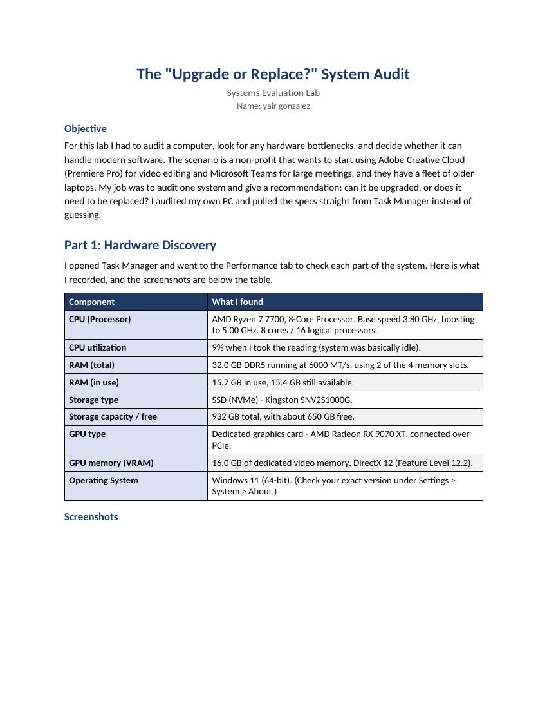

I found the most useful idea from this module is that when you're going to buy an upgraded computer, you should go off your actual system specifications rather than just guessing. Using the CPU, RAM, Hard Drive, and GPU of a current system, I will be able to determine if the computer meets the requirements for a program such as Adobe Premiere Pro and therefore if it has enough power to do what I want. This is also applicable to the business world. Businesses and organizations want to know if they should either upgrade their old computers or simply purchase all new ones. An example of this would be a laptop with very little RAM or low-end graphics that could do simple things; however, it wouldn't be very dependable when doing video editing or participating in large online meetings.